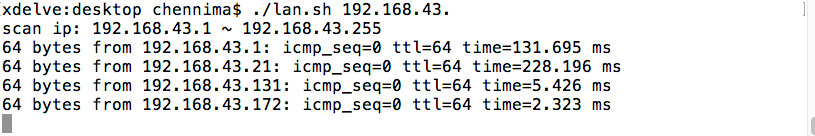

为了找到局域网内的在线主机，我写了这个bash脚本，运行以快速显示主机列表。
保存以下代码为lan.sh
echo "scan ip: $11 ~ $1255"
for ((i=1; i<255; i+=50))
do
for ((j=i; j<i+50 && j<255 ; j++))
do
ping -t 1 $1$j | grep bytes from 2>&1 &
done
sleep 2
done使用时把当前子网前三段作为参数传入，本工具会自动扫描1-255的所有机器是否在线。
运行效果：

相关文档
随便看看